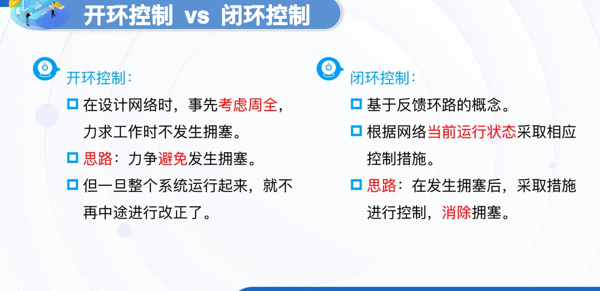
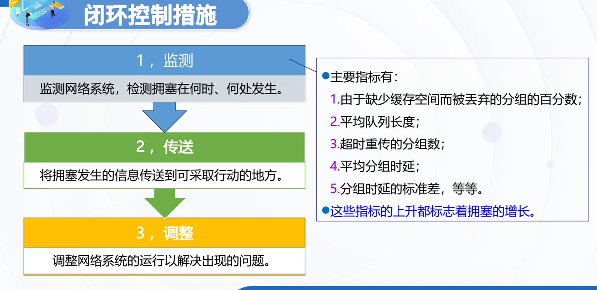
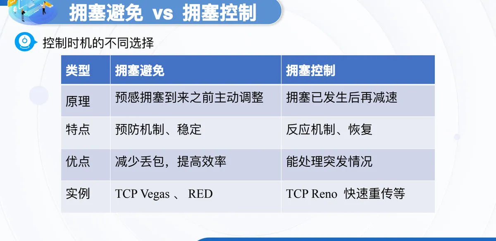
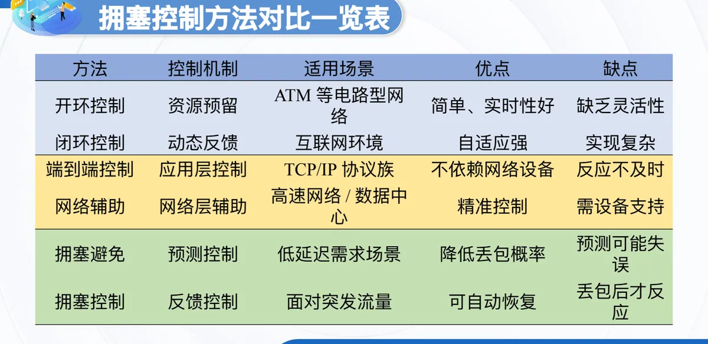

计算机通信与网络 · 第二版讲义 · 第 6 章 网络中的拥塞控制
6.2 拥塞控制的基本方法
拥塞控制要在网络还没有垮掉之前把负荷压下来，而网络状态时刻在变，所以它本质上是一个动态问题。本节按三种维度介绍拥塞控制的基本方法：按控制机制分开环控制与闭环控制，按控制时机分拥塞避免与拥塞控制，按实现位置分端到端控制与网络辅助控制，最后把六种方法放在一张表里对比。
1. 拥塞控制的一般原理
拥塞控制有一个前提：网络能够承受现有的网络负荷——只有网络仍能维持基本的转发能力时，控制措施才起作用。课件对难度有很直白的判断：实践证明，拥塞控制是很难设计的，因为它是一个动态问题，网络的负荷、拓扑与流量分布都在变，同一套参数很难在各种情况下都合适。
有一点格外容易误解：分组的丢失是网络发生拥塞的征兆，而不是原因。队列排满之后才有分组被丢弃，丢包只是把已经存在的拥塞暴露出来；若反过来把丢包当成病因，就可能越治越糟。课件还提醒，在许多情况下，甚至正是拥塞控制本身成为引起网络性能恶化、甚至发生死锁的原因——控制动作本身也要占用资源、压低发送速率，做过头就是雪上加霜。
按课件给出的分类，方法有三个维度：按控制机制分开环控制与闭环控制，按控制时机分拥塞避免（事先）与拥塞控制（事后），按实现位置分端到端控制与网络辅助控制。
2. 开环控制与闭环控制
开环控制在设计网络时事先考虑周全，力求系统工作时根本不发生拥塞，思路是力争避免发生拥塞；整个系统一旦运行起来，就不再中途进行改正了。它依靠规划阶段的资源与流量安排，不依赖运行中的反馈。
闭环控制基于反馈环路的概念，根据网络当前运行状态采取相应控制措施，思路是在发生拥塞之后采取措施进行控制、消除拥塞。它多了一条「观测—判断—行动」的回路，因而自适应能力强，代价是必须把状态信息测出来、传出去，实现更复杂。

3. 闭环控制的三个步骤
闭环控制的动作可以拆成三步：监测、传送、调整。监测，是监测网络系统、检测拥塞在何时何处发生；传送，是把拥塞发生的信息传送到可采取行动的地方；调整，则是调整网络系统的运行以解决出现的问题。三步首尾相接构成一条完整的回路，缺一步控制都落不了地。

（1）监测：拿什么量来判断
监测要落到可测量的量上，主要指标有：由于缺少缓存空间而被丢弃的分组的百分数、平均队列长度、超时重传的分组数、平均分组时延、分组时延的标准差，等等。这些指标的上升都标志着拥塞的增长，它们分别从丢包、排队、重传和时延几个侧面反映网络的繁忙程度。
（2）传送：送到能行动的地方
拥塞信息要送到有办法采取行动的地方，常见做法有三种：将拥塞发生的信息传送到产生分组的源站；在路由器转发的分组中保留一个比特或字段，用该比特或字段的值表示网络没有拥塞或产生了拥塞；周期性地发出探测分组等。
（3）调整：时间常数的两难
调整环节最棘手的是节奏：控制动作过于频繁，会使系统产生不稳定的振荡；过于迟缓，又不具有任何实用价值，所以选择正确的时间常数是相当困难的。这与「拥塞控制是动态问题」的判断正好呼应。
4. 端到端控制与网络辅助控制
端到端拥塞控制中，网络层不为拥塞控制提供任何帮助和支持，端系统只能通过对网络行为（丢包或时延增加）的观测，判断网络是否发生拥塞。它不要求网络设备配合，但只能间接推断，反应不够及时。
网络辅助的拥塞控制要网络设备与端系统配合，反馈有两条路径。一条是直接网络反馈：路由器以阻塞分组的形式通知发送方「网络拥塞了」。另一条是经由接收方的网络反馈：路由器标识从发送方流向接收方分组中的某个字段以指示拥塞的产生，再由接收方通知发送方「网络拥塞了」。前者直接告知源站，来得快；后者要绕接收方一圈，但对路由器的要求更低。
5. 拥塞避免与拥塞控制
按控制时机的不同选择，方法又分成两类；这里的「拥塞控制」是狭义的，专指与拥塞避免并列的事后控制。拥塞避免是预感拥塞到来之前主动调整，属于预防机制，运行稳定，长处是减少丢包、提高效率，实例有 TCP Vegas、随机早期检测 RED（Random Early Detection）；拥塞控制是拥塞已发生之后再减速，属于反应机制与恢复手段，长处是能处理突发情况，实例有 TCP Reno 的快速重传等。两者不是二选一：预防可能预测失误，反应要等丢包之后才动，实际系统往往两套动作兼备。

| 类型 | 拥塞避免 | 拥塞控制 |
|---|---|---|
| 原理 | 预感拥塞到来之前主动调整 | 拥塞已发生后再减速 |
| 特点 | 预防机制、稳定 | 反应机制、恢复 |
| 优点 | 减少丢包，提高效率 | 能处理突发情况 |
| 实例 | TCP Vegas、RED | TCP Reno 快速重传等 |
6. 六种方法的对比一览
把三组分类合起来看，六种方法各可列成一张表。读表时有两点值得留意：优点与缺点往往互为代价；六种方法分属三个维度，同一套方案里完全可以叠加共存，并非六选一。

| 方法 | 控制机制 | 适用场景 | 优点 | 缺点 |
|---|---|---|---|---|
| 开环控制 | 资源预留 | ATM 等电路型网络 | 简单、实时性好 | 缺乏灵活性 |
| 闭环控制 | 动态反馈 | 互联网环境 | 自适应强 | 实现复杂 |
| 端到端控制 | 应用层控制 | TCP/IP 协议族 | 不依赖网络设备 | 反应不及时 |
| 网络辅助 | 网络层辅助 | 高速网络/数据中心 | 精准控制 | 需设备支持 |
| 拥塞避免 | 预测控制 | 低延迟需求场景 | 降低丢包概率 | 预测可能失误 |
| 拥塞控制 | 反馈控制 | 面对突发流量 | 可自动恢复 | 丢包后才反应 |
本节小结
- 拥塞控制的前提是网络能够承受现有的网络负荷；它是动态问题，很难设计。分组的丢失是拥塞的征兆而不是原因，控制不当甚至会让性能恶化、发生死锁。
- 按控制机制分开环控制与闭环控制：开环在设计网络时事先考虑周全、运行后不再中途改正；闭环基于反馈环路，按网络当前运行状态采取措施。
- 闭环控制分监测、传送、调整三步；监测指标有被丢弃分组的百分数、平均队列长度、超时重传分组数、平均分组时延及其标准差等，指标上升即标志拥塞增长；调整过快会振荡、过慢则无实用价值。
- 按实现位置分端到端控制与网络辅助控制：前者网络层不提供帮助，端系统靠丢包或时延增加判断拥塞；后者有直接网络反馈与经由接收方的网络反馈两条路径。
- 按控制时机分拥塞避免与拥塞控制：前者在预感拥塞到来之前主动调整，后者在拥塞发生之后再减速，实例分别如 TCP Vegas、RED 与 TCP Reno 的快速重传。
- 三组分类是三个维度，可以叠加。6.1 节讨论的拥塞现象与产生原因是这些方法要解决的问题，6.3 节路由器上的分组排队规则是它们在设备一侧的落点；第一版讲义 5.5 TCP的拥塞控制给出了用在 TCP 上的完整过程。